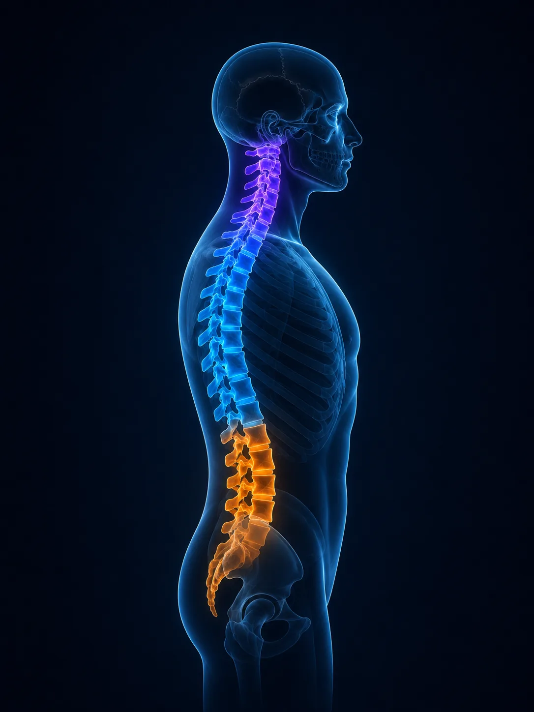

Ostéopathie structurelle
et énergie musculaire
Rachis • Membres supérieurs • Membres inférieurs
Que voulez-vous faire ?
Rachis • Membres supérieurs • Membres inférieurs
Dernière activité
Choisissez une zone
Sélectionnez la zone du corps sur laquelle vous souhaitez travailler.

Des vidéos claires, des étapes, des quiz et un suivi de progression.
Choisissez une région

Sélectionnez une technique
Lecteur pédagogique
Voix off ElevenLabs à intégrer ensuite.
Comment voulez-vous réviser ?
Les cartes sont tirées uniquement parmi les techniques déjà vues.
Techniques déjà consultées
Testez-vous avant de retourner voir la réponse.
Les cartes sont générées uniquement à partir des techniques déjà consultées.
Choisissez un mode
Question 4 / 20
Suivi pédagogique
Vous êtes régulier et vous progressez sur toutes les zones.
Techniques enregistrées
Compte étudiant
Parcours structurel et énergie musculaire